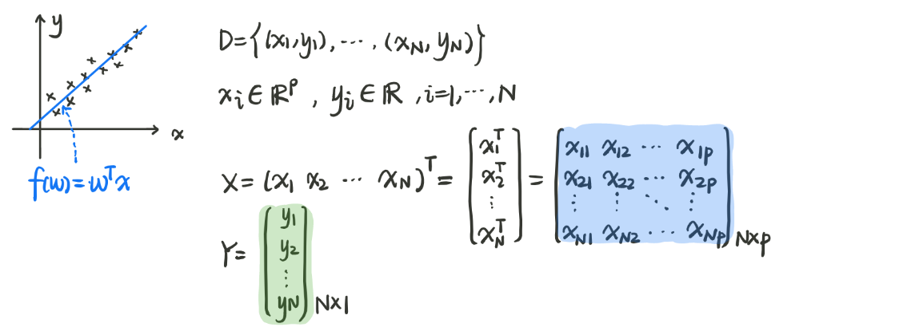
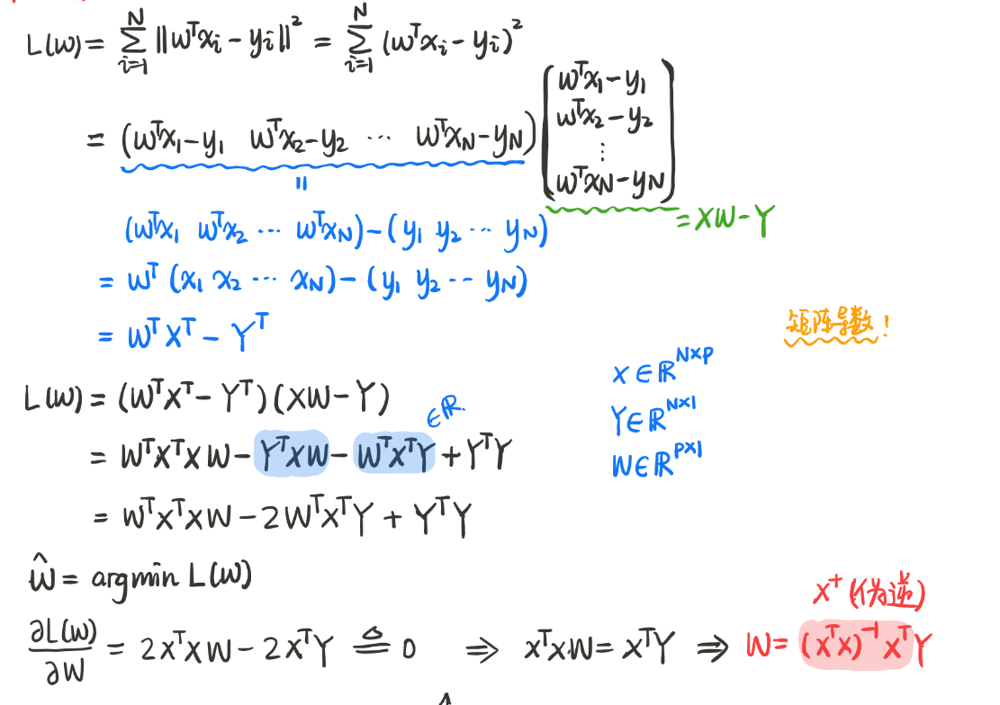
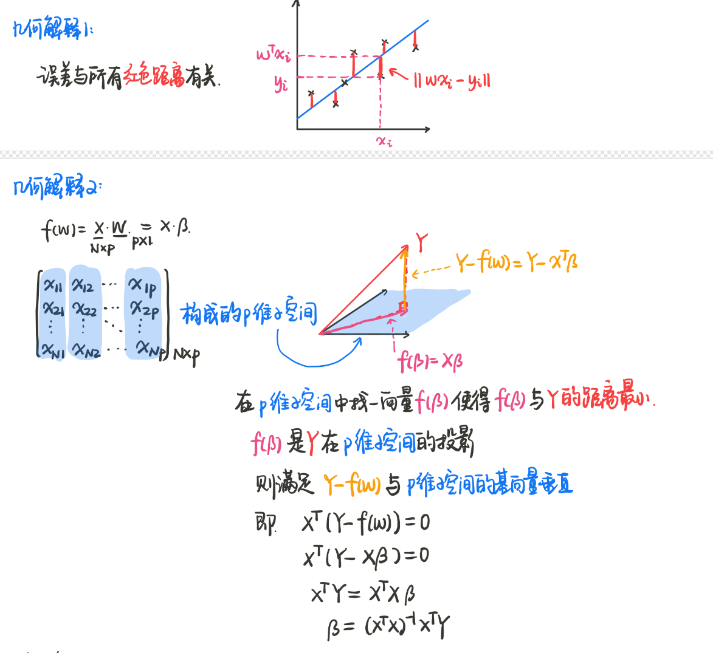
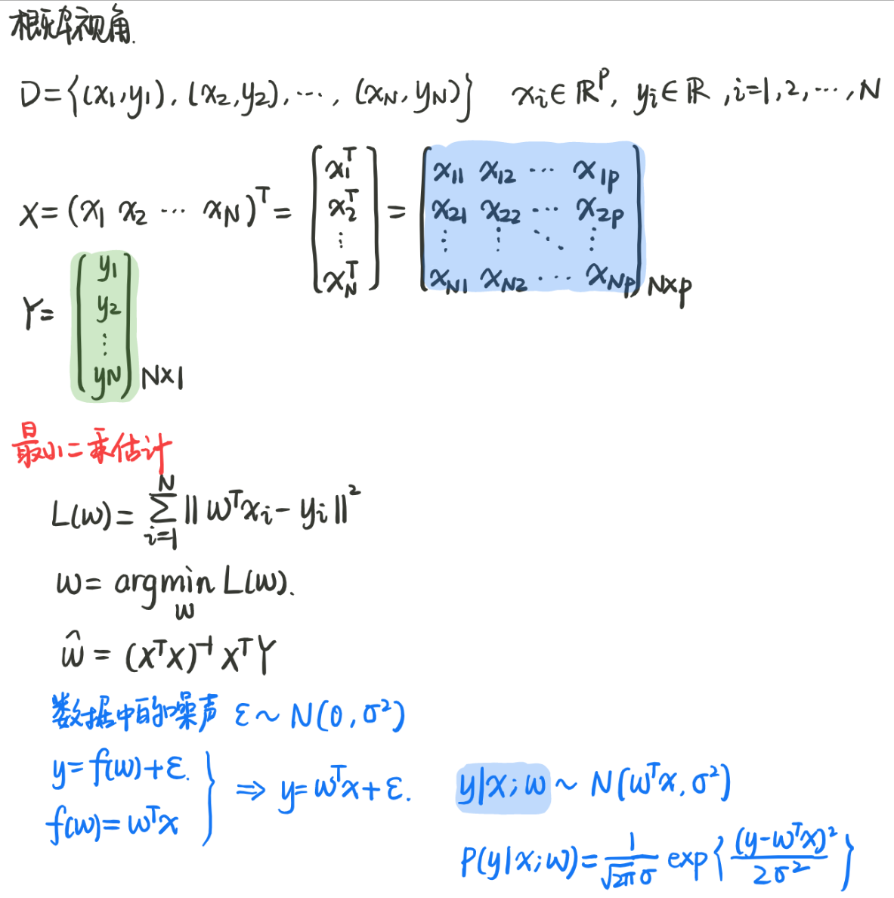
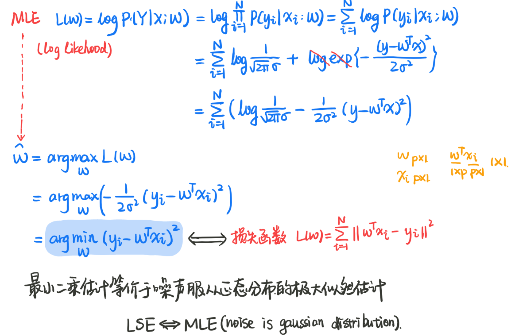

几秒 读完 (大约 0 个字)

线性回归（基于神经网络+梯度下降）
定义：基于特征和标签之间的线性函数关系约束，线性回归通过建立单层神经网络，将神经网络中每一个神经元当成是函数关系中的一个参数，通过利用初始输出和目标输出建立损失，并优化损失最小的方式使得神经元的数值和真实函数参数数值最相近，从而通过网络训练得到最符合数据分布的函数关系。
实施步骤：
- 初始通过随机化线性函数的参数，通过输入的x，会得到一系列y_h
- 输出的y_h和真实值y之间因为神经元参数不正确产生差距，为了y_h和y能尽量地逼近，我们通过平方误差损失函数（MSE Loss）来描述这种误差。
- 类似于通过求导得到损失函数最优解的方式，我们通过梯度下降法将这种误差传递到参数，通过调整参数使误差达到最小
- 通过几轮的训练，我们得到的最小的损失值对应的神经元数值，就是描述输入输出的线性关系的最好的参数。
要点：
- 确定输入输出之间一定满足线性关系，这一点可以通过对x,y画图看出，只有线性关系才能使用线性回归训练得到
- 由于线性关系唯一由神经元个数决定，不同的参数个数唯一决定了这种线性关系，因此需要选择适合的特征用于线性回归
最小二乘法（基于数据计算得到解析解的线性回归）
参考shuhuai的视频

定义：最小二乘法是希望对 n 维平面的线性数据进行拟合得到输入输出的线性函数，其思想是建立一个线性模型 $$y = w_{1}x + … + w_{k}x + b $$ 进行预测并使得预测的损失最小，其中损失函数为 $$L = \sum_{i}(y_{i}-y_{i}) = \sum_i(y_{i}-w^{T}x_{i}) $$ 我们可以采用多种方式对这个损失函数进行优化
1. 矩阵推导出最小二乘解析解
将损失函数化成矩阵表示，之后令损失函数对w求导得0，求得最优解，过程如下：

2. 利用函数求导方式求得最小二乘估计解析解
除了表示成矩阵的形式，我们也可以直接对损失函数进行化简，求得使得损失函数最小的参数值，这个部分更容易推导
- 离差是一个凸函数
- 对凸函数里面的参数求导得到全局损失最小值对应的参数

3. 最小二乘估计的集合解释
- 最小二乘法实际上第一种形象的解释就是求出最能拟合数据点的直线，而最能拟合则使用数据到直线的离差最小的方式来表示
- 第二种集合解释则是从线性代数的角度出发：
- 将 N * p维的数据 X 想象成一个 p 维子空间的的基，
- 由于 y 不能完全由这 p 维数据线性表出，因此 y 则在这个 p 维子空间的外面，
- 而我们求得的 $y^{hat}$ 则是这个 p 维子空间里离 y 最近的向量，即 y 在子空间中的投影，
- 而损失则是 y 和投影之间的差距，即投影的法向量，
- 这样使得法向量最小，可以求得和矩阵表达求解析解里面相同的结果。

4. 概率角度的最小二乘估计

当使用$$y = w^{\top}x + \epsilon $$, $$\epsilon \sim N(0,\sigma^{2})$$ 表达输入输出的关系，并进一步利用此关系进行最大似然估计时，我们发现可以得到和上述相同的损失的表达式，这也就说明，当使用最大二乘估计时，其概率视角就是在噪声为高斯分布的基础上进行最大似然估计的结果。

这一节中出现的有用的函数
- 使用plt绘制散点图
1 | from matplotlib import pyplot as plt |
- 自行制作dataLoader: dataloader 为输入dataset可以随机获取dataset中batch size 个样本
通过使用打乱的indices，每次yield batch size个样本，生成的生成器可以用for调用
1 |
|
- 参数初始化：自行初始化网络中的参数，使用init模块
1 |
|
重要的问题：
1.构建一个深度学习网络并训练需要哪些步骤？
深度学习网络的主要组成部分就是数据，网络和训练，因此可以根据这三部分展开为下面几个步骤：
0.数据部分
- 生成数据集/找到现有数据集
- 根据数据集构建Dataset 并用之构建dataloader
- （可选）调用构建的Dataloader，得到数据并可视化，检查实现的正确性，并对数据有一定了解
1.网络部分
4. 定义模型，初始化模型参数
5. 定义损失函数，如本节的MSE loss
6. 定义优化函数，SGD,Adam… 及其参数：学习率，动量，weight_decay…
2.训练部分
7. 使用循环的方式，每个循环训练一遍所有数据
8. 将数据输入网络，根据损失函数和网络输出建立损失
9. 梯度清零，损失回传，优化器更新损失
10. 记录损失，可视化结果，往复训练
2.什么时候该用parameter.data?
下面是课程中使用的优化器的代码，可以发现，参数的更新使用了param.data
1 |
|
根据我的理解，这是由于反向传播机制在需要更新的参数进行运算时会构建动态运算图，如果直接使用这个param进行更新，就会在动态图中计入这一部分，从而反向传播时也会将这一步运算的梯度加入。而我们实际希望的则是损失函数对参数进行求导，而不希望再此参数上“节外生枝”。因此，在网络前向传播和损失函数计算之外的参数运算，应当使用param.data进行更新